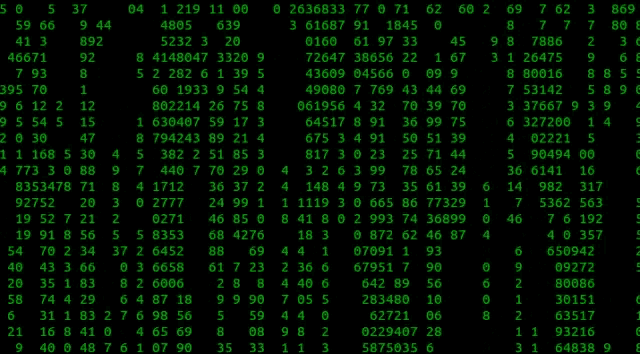

<DOCTYPE! HTML>
<html>
	<head>
		<title>mischief</title>
		<link href="rules.css" rel="stylesheet" type="text/css">
	</head>

	<body>
		<div id="description">
			<a>Wanted to cause a little mischief to the anime scene so I decided to add one of the most chaotic characters to a world I believe he would've contributed more to, considering that Light Yagami has a thing for "cleansing a corrupt world".</a></div>
		<div id="weblink">
          <a href="https://en.wikipedia.org/wiki/Akira_(manga)#Characters">Let's see if it's still up!</a></div>
         <div id="before_hack">
           </div>
         <div id="after_hack">
           </div>

           
         <div id="mid_section"></div>
	</body>
</html>